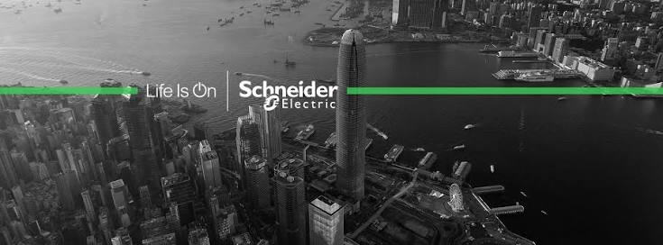
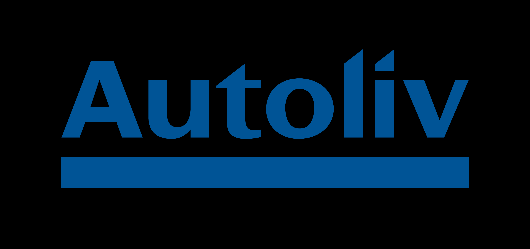
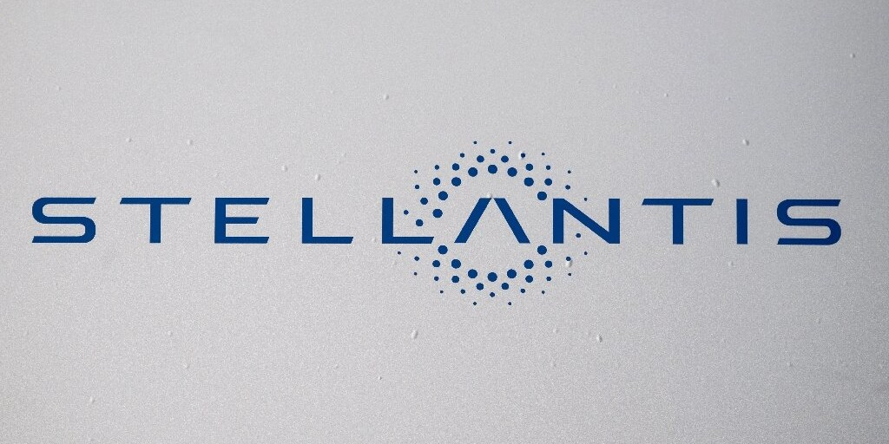
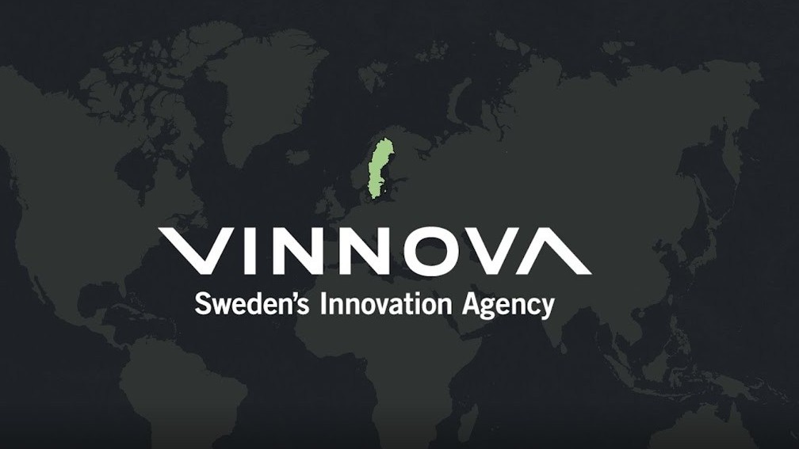
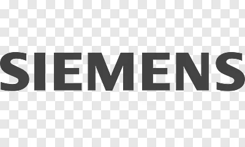
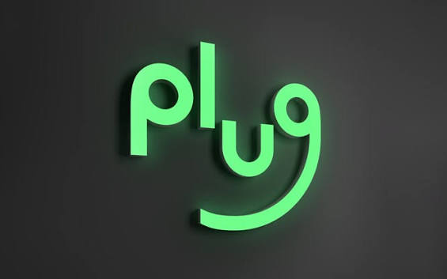
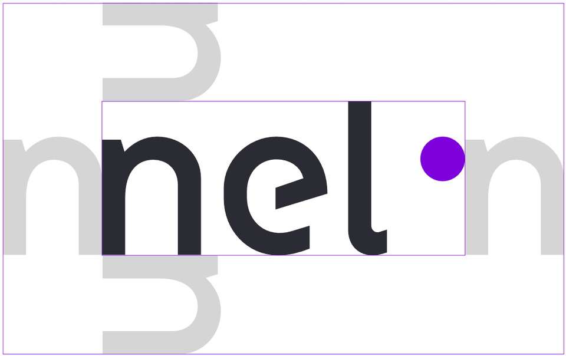

Welcome to Velopipe! Innovation process can be potentially disruptive without strategy. The key is timing and to ensure it aligns with business or market trends. Dig right in.

Electronics '26
The global electronics infrastructure framework is undergoing a profound paradigm shift driven by automation engineering, decentralized energy architectures, and upgraded hardware storage parameters. As enterprise networks scale, the adoption of edge-computing frameworks and intelligent metering grids has revolutionized manufacturing line efficiencies. This curated intelligence pipeline tracks core structural developments across solid-state integration and localized hardware platforms shaping the next era of industrial connectivity.
- Automation: Honeywell, Schneider Electric, Rockwell, etc.
- Fast Charging / Magsafe: Apple, Samsung, OnePlus, etc.
- Storage Transitions: SanDisk, WD, Seagate, Transcend, etc.
- Skid Units: ABB, Schneider, GE, etc.
- Off-Grid Power: GE, EDF, Enel, etc.
- Smart Infra: Schneider, GE, Havells, Honeywell, etc.
- Lithium-ion Batteries: Sunoco, etc.
- Smart Metering: Duke, Schneider, Engie, etc.
- Surface PCs, Tablet Computing: HP, Microsoft, Dell, etc.
- Esim: Apple, Samsung, OnePlus, Oppo, etc.



Automotive '26
Modern automotive logistics and manufacturing parameters are increasingly defined by full-stack electrification and localized machine learning intelligence matrices. The current automotive transition focuses heavily on refining the thermodynamic efficiency of battery powertrains, integrating high-capacity solid-state chemistry layouts, and validating level-4 autonomous driving systems. The reference matrices detailed below isolate the pioneering enterprise organizations driving the physical and digital software infrastructure of transportation systems.
- EV Powertrains: Tesla, BYD, Rimac, etc.
- Dashboard Cameras Nexar, Garmin, Kenwood, etc. Get more info!
- Autonomous Driving: Waymo, Cruise, MobileEye, etc.
- Solid-State Batteries: QuantumScape, Toyota, Panasonic, etc.
- Connected Infotainment: Android Automotive, Apple CarPlay, etc.
- Advanced Driver Assistance Systems (ADAS): Bosch, Continental, ZF, etc.
Aviation '26
Aerospace engineering frameworks in 2026 demand unprecedented compliance safety thresholds alongside aggressive greenhouse gas mitigation targets. The integration of high-fidelity computational fluid dynamics (CFD) simulation modeling, precision fly-by-wire mechanics, and all-electric propulsion concepts represent the frontline of modern aviation strategy. This tracking index consolidates pioneering airframe safety assets, tracking automated navigation breakthroughs, and enterprise simulation pipelines.
- Autoland: Boeing, Airbus, Embraer, etc.
- TCAS: Boeing, Lockheed Martin, Rafale, etc.
- CFD simulation: Nasa, Sukhoi, etc.
- Tracon Simulator: Boeing, Airbus, etc.
- Fly-by-wire throttle: Airbus, Saab, etc.
- CAT III equipment: Embraer, ATR, Boeing, etc.
- All Electric engines: Boeing, GE, etc.



Industrial Software & AI Infrastructure '26
- Digital Twins: Siemens Omniverse, Dassault Systèmes, Bentley, etc.
- AI Automation: Github, Wixel, Manus, etc.
- ERP Cloud / Migration: Zoho suite, Atlassian, etc.
- Predictive Maintenance: SAP Asset Intelligence, IBM Maximo, SparkCognition, etc.
- Physics-Informed Neural Networks: Ansys SimAI, Nvidia Modulus, Altair, etc.
- PLM Architecture: PTC Windchill, Siemens Teamcenter, Oracle Agile, etc.


Green Hydrogen & Grid Energy Storage '26
Transitioning localized electrical networks toward zero-carbon baseline operations requires massive scalability developments across green hydrogen and long-duration energy storage. The expansion of proton exchange membrane (PEM) electrolyzers coupled with industrial-scale vanadium flow batteries bridges the structural gap inherent in intermittent renewable capture methods. The indexed ecosystem resources below categorize the critical technological components enabling modern grid stability frameworks.
- PEM Electrolyzers: Plug Power, Nel Hydrogen, Siemens Energy, etc.
- Flow Batteries (Vanadium/Iron): ESS Inc., Invinity Energy Systems, CellCube, etc.
- Cryogenic Carbon Capture: Climeworks, Carbon Engineering, Aker, etc.
- H2 Microgrids: Ballard Power Systems, Bloom Energy, Cummins, etc.